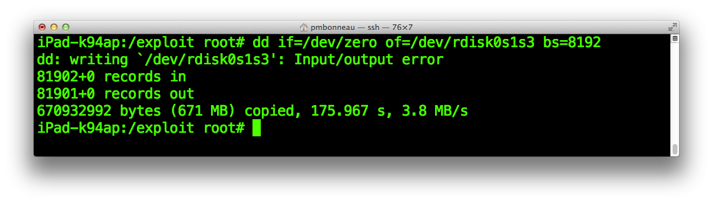

Dump and overwrite TLB
From the HFS wrapper output we get, the call that interests us is the one right before iBoot panics. This is the fifth call.
From position 0x28e000 on the HFS partition, 0xFFD92000 bytes will be copied to 0x9FFB80C0 in device's memory. Interesting fact, 0xFFD92000 is 4292419584 bytes (around 4 GB). Let's have a look of how the memory is organized on the device when iBoot is running.
We know from our previous image disassembly with Ghidra that our iOS 5.0.1 iBoot is running at 0x9FF00000 on iPad2,2 (A5). When our heap buffer overflow is trigerred, iBoot will start to copy around 4 GB of data from Exploit partition offset 0x28e000 and copy it back to memory address 0x9FFB80C0. The overflow goes forward in memory, replacing all data that comes beyond memory address 0x9FFB80C0 by however data is on the filesystem from 0x28e000. Eventually, it will overwrite on some important iBoot structures such as TLB (Translation Look-aside Buffer) which will eventually cause the bootloader to panic.
From Joshua Hill's (p0sixninja) writeup about this iBoot exploit, we can learn the following about the TLB.
The TLB is a specialized cache that holds a table of physical addresses which are mapped to virtual addresses in the system memory. In iBEC this structure starts at address 0x5FFF8000. This would make since because reason for the crash from the report states "Domain Error". A little research in the ARM technical reference shows that this happens when an illegal virtual to physical page mapping is attempted to be looked up. The TLB is essentially one 32bit address containing representing each physical to virtual mapping on the system.
Note that Joshua's exploit implementation has been done on a different device and using iBEC instead of iBoot like we are doing, so we must change In iBEC this structure starts at address 0x5FFF8000
to in iBoot this structure starts at address 0x9FFF8000
.
On both secondry stage bootloaders (iBoot and iBEC), the TLB is always located at [baseaddr] + 0xF8000. The TLB will be located at 0x9FF00000 + 0xF8000 = 0x9FFF8000 on our iOS 5.0.1 iBoot for iPad2,2. Since 0x9FFF8000 is greater than 0x9FFB80C0 and we are attempting to write over 4 GB from 0x9FFB80C0, we will obviously destroy the TLB while iBoot is running. To be able to go further with this, we will write a copy of the TLB at a specific position in the filesystem. Then, we let iBoot overwrite the TLB in memory by a copy of the same TLB from filesystem when the heap buffer overflow is triggered.
The TLB is a cache, it holds the latest virtual memory to physical memory translations done by the processor. It is built at run time, so this means that we will not be able to get it directly from the iBoot image binary. Instead, we will have to dump a copy of it from device's memory while iBoot is running using a payload called memrw. This payload can be used to read or write data in device memory at bootloader level, based on @xerub's iBoot payload development toolkit (also known as iBex).
Download memrw source code here, then unzip the archive.
A folder named memrw_src will be extracted and it should contains the following files. I suggest you move memrw_src to our iOS 5.0.1 work folder.
Currently, this payload is designed to run on iOS 7.1.2 iBoot for the following devices.
- iPhone 4 (3,1 - N90AP)
- iPhone 4s (4,1 - N90AP)
- iPad 2nd (2,2 - K94AP)
- iPad 3rd (3,1 - J1AP)
- iPhone 4 (3,2 - N90BAP)
- iPhone 4 (3,3 - N92AP)
- iPad 2nd (2,1 - K93AP)
- iPad 2nd (2,3 - K95AP)
- iPad 3rd (3,2 - J2AP)
- iPad 3rd (3,3 - J2AAP)
- Written in ARM assembly language
- Functions in iBoot must be hooked properly (find offsets) regarding the target bootloader version
- Written in C language
- Dynamically find functions offsets, this is why we are able run it on multiple iBoot version (with some limits thought).
pmbonneau-mac#make
The compiled ARM binary we need is the one named as payload (without the .elf file extension), move it to our iOS 5.0.1 work folder.In order to run the payload then dump the TLB live, we are going to patch iBoot go command handler address to 0x80000000 (which is loadaddr). The go command usually does the prepare_and_jump() routine. When you send a bootloader image over USB, go will do some stuff (such as remove img3 header then copy then image to loadaddr if I remember) then execute it. The loadaddr is the address (usually 0x80000000) for which images are placed to before they are booted.
Use iH8sn0w's iBoot32patcher to redirect go command handler of iBoot. Important, use a stock decrypted iBoot image which is the same version as the signed iBoot we are working on the exploit. In our case, let's use an iOS 5.0.1 stock decrypted iBoot image.
pmbonneau-mac#iBoot32Patcher iBoot.k94ap.RELEASE_dec.bin iBoot.k94ap.RELEASE_GoPayload.bin -c go 0x80000000
Send the patched iBoot to /bootloaders on the device using SCP.pmbonneau-mac#scp -P 2022 iBoot.k94ap.RELEASE_GoPayload.bin root@localhost:/bootloaders
Run the patched iBoot using kloader.
ipad-k94ap#kloader /bootloaders/iBoot.k94ap.RELEASE_GoPayload.bin
iBoot should be executed shortly after.
You will need both serial (termz) and usb (irecovery) consoles to dump TLB the old good way. :^)
Using a serial cable, open termz console with the proper /dev/cu. device like we did previously.
Start also a console session on iBoot using iRecovery.pmbonneau-mac#irecovery -s
Send the memrw payload binary to iBoot.irecovery>/send memrw
Execute the payload this way.irecovery>go [mread/mwrite] [start address] [count]
The TLB is located at 0x9FFF8000 and it is 0x4000 (16KB length).irecovery>go mread 0x9FFF8000 0x4000
From termz console, you should see iBoot reading 16KB of data from its memory. It will end with "Read OK". Note that the data output will also be visible from the irecovery console, but it is less reliable than serial. Copy all the dumped bytes from the serial console (termz) to clipboard.Create a blank file of [TLB size]+[Block size] using dd, were TLB size is 16384 (2 blocs of 8192 bytes) and Block size is 8192 (1 bloc of 8192 bytes).
pmbonneau-mac#dd if=/dev/zero of=iBoot.k94ap.TLB_[heap buffer address].bin bs=8192 count=3
As I mentionned briefly in the introduction of this writeup, some changes to nvram and disk partitions will shift the heap buffer. There's also some other factors beside of those two that could do unexpected behaviour related to shifting the heap buffer address. In most cases, if not all, this will lead to a misalignment of offsets resulting in an awful death of your exploit implementation. You will have to re-align TLB, overwritten iBoot, exploit shellcode and new iBoot image again to get things working as before. This is why I usually add _[heap buffer address] to data blocks I'm going to write into the Exploit partition using dd command. In my case, the heap buffer address currently set on my iPad 2nd is 0x9FFB80C0. We get it from the fifth call of the HFSReadBlock() wrapper, the one before panic occures.
Using a hex editor, open the file iBoot.k94ap.TLB_[heap buffer address].bin you have previously created. Before paste the dumped TLB bytes into this file, we must calculate the following offsets.
The exact position for which we will have to write our three [block size] sized blocks in the Exploit partition.
The exact position for which we will write the dumped TLB data in those three blocks. The maths we are going to do in order to align our dumped TLB data with the TLB of the current running iBoot instance will most likely end up with a remainder. We can't just paste the data at 0x0 in the blocks we will write back to the Exploit partition, because the data will not be properly aligned and some unexpected behavior might happen.
Let's calculate the exact position for which we will have to write our three [block size] sized blocks for the TLB in the Exploit partition. The next calculations will be based on the following two-steps procedure.
- Data we are writing (or overwriting)
From iBoot running memory, we know that TLB is located at [base address + 0xF8000]. In the case of my iPad 2nd (K94AP), TLB is located at 0x9FFF8000.
- Our HFSReadBlock() wrapper output
HFSReadBlock: offset [position on disk device] size [size of the read] buffer [position in device memory]
From "offset", read "size" bytes into "buffer"
For the TLB, we calculate the blocks position this way.
0x9FFF8000 - 0x9FFB80C0 = 0x3FF40This how much bytes there is between our heap buffer address and the TLB in iBoot running memory. Now, we must calculate at which position we should write those blocks in the Exploit partition, to make iBoot HFS+ driver write them in the running memory at the right position when the heap buffer overflow is triggered. We already know that iBoot HFS+ driver starts to read bytes from our Exploit HFS+ filesystem at 0x28E000 ("offset") to running memory at 0x9FFB80C0 when the heap buffer overflow occures. We know this information from the last call of our HFSReadBlock() wrapper.
So, if we want to know exactly at which position we must write back our TLB in the Exploit HFS+ filesystem, we must add 0x3FF40 (TLB offset in memory) to 0x28E000 (heap buffer overflow trigger point in the filesystem).
0x28E000 + 0x3FF40 = 0x2CDF40In other words, the TLB must be written to 0x2CDF40 in our Exploit filesystem in order to be written to 0x9FFF8000 in running memory once the heap buffer overflow occures.
Now, we must find which block 0x2CDF40 is on the filesystem by dividing by device [block size].
0x2CDF40 / 0x2000 = 0x166 (358)We will have to write our TLB at block 358 in our Exploit filesystem. Before do this, we must block-size align the data we will put in the three empty block we previously created using dd. The issue we have there is that 0x2CDF40 can't be divided by [block size] value without a remainder.
For example, 0x2CDF40 (2977408) / 0x2000 (8192) = 363,453125We won't see the remainder if the calculator is set in hex mode. However, we can still find it out by doing the following maths.
Note : the structure is the data contained in block we write in filesystem.
[Position of our structure] - ([number of block between our structure and heap address] * [block size])
0x2CDF40 - (0x166 * 0x2000) = 0x2CDF40 - 0x2CC000 = 0x1F40This means that we must add a padding of 0x1F40 bytes before our TLB data, at block 358. Open the empty 24 kilobytes (three blocks) iBoot.k94ap.TLB_[heap buffer address].bin file we created previously in a hex editor, then go to position 0x1F40.
Paste the TLB data we dumped from termz exactly at the position we've just calculated, 0x1F40 in this case.
The TLB hack
In his writeup about this iBoot exploit, @nyansatan said that the success rate of the exploit could be increased by directly mapping the physical iBoot base address to the virtual one in TLB. The physical address space in iBoot is from [iBoot base address] to ([iBoot base address] + [Device's RAM size]) - 0x1. The iPad 2nd (k94ap) has 512 megabytes of RAM memory, iBoot physical address space is from 0x9FF00000 to 0xBFEFFFFF.
I calculated 0xBFEFFFFF this way.
512 megabytes = 1024 * 1024 * 512
512 megabytes = 536870912 bytes (0x20000000)
0x9FF00000 + (0x20000000 - 0x1) = 0xBFEFFFFF
Note, we substract 0x1 because we consider that 0x9FF00000 is like 0x0, and we have 512 megabytes of RAM, so 0x20000000 - 0x1 addresses available.
From 0xBFF00000 is the beginning of iBoot virtual addresses space and what is interesting about it is that this is an exact replica of the physical address space. In other words, virtual address 0xBFF00000 contains the same value as physical address 0x9FF00000 (which is iBoot reset vector). This means that iBoot memory space is actually replicated at each [Device's RAM size] iterations. If we write something in the physical address space, the change will be considered in the virtual address space as well. This is also the same for the reverse case, if we write something in the virtual address space, the change will be also considered in the physical address one. Eventually, we will use this fact to overwrite iBoot itself from the heap buffer overflow.
Let's go back to the TLB, represent it as an array of 32 bytes integers like this [0xFFFFFFFF 0xFFFFFFFE 0xFFFFFFFD 0xFFFFFFFC 0xFFFFFFFB ...] as an example.
- TLB[0x0] = 0xFFFFFFFF
- TLB[0x1] = 0xFFFFFFFE
- TLB[0x2] = 0xFFFFFFFD
- TLB[0x3] = 0xFFFFFFFC
- TLB[0x4] = 0xFFFFFFFB
From our dumped TLB data, look at TLB[0x0]. The value found at this address should be the same 32 bytes value as the one at TLB[iBoot base address / 0x100000]. To calculate a position in the TLB hexadecimal dump considering that this is a 32 byte array, you must multiply by four.
For example, TLB[iBoot base address / 0x100000] would be at TLB[0x9FF00000 / 0x100000] = TLB[0x9FF], 0x9FF * 0x4 = 0x27FC in the TLB dump data.
Important, we added some padding before our TLB dump data in our iBoot.k94ap.TLB_[heap buffer address].bin file to fit with device block size. This padding was 0x1F40 bytes, so we must add this to 0x27FC in order to get the correct position we are searching for in our iBoot.k94ap.TLB_[heap buffer address].bin file.
0x1F40 + 0x27FC = 0x473CAt 0x474C in our iBoot.k94ap.TLB_[heap buffer address].bin, we should get the value of TLB[0x9FF] which is 0x320CF0BF (0xBFF00C32 in byte reverse order). As explained before, we know that this is an address in the virtual memory space of iBoot. Our TLB hack consists of directly mapping the physical iBoot base address to the virtual one, so we will patch 0xBFF00C32 to 0x9FF00C32 in order to acheive this.
 Replace 0x320CF0BF (0xBFF00C32) by 0x320CF09F (0x9FF00C32).
Save the file, then upload it to /exploit on device using SCP.
From a SSH connection, edit the exploit.sh script using a text editor. Uncomment line echo "Writing TLB..." then add the following dd command.
Replace 0x320CF0BF (0xBFF00C32) by 0x320CF09F (0x9FF00C32).
Save the file, then upload it to /exploit on device using SCP.
From a SSH connection, edit the exploit.sh script using a text editor. Uncomment line echo "Writing TLB..." then add the following dd command.
dd if=iBoot.k94ap.TLB_[heap buffer address].bin of=/dev/rdisk0s1s3 bs=[block size] seek=[block position]
Remember, we set at which position to start writing data from by specifying the seek parameter to the dd command. I strongly recommand to completely obliterate the Exploit HFS+ filesystem before run the exploit.sh script again.ipad-k94ap#dd if=/dev/zero of=/dev/rdisk0s1s3 bs=8192
Once the Exploit partition is zero-ed, run the script. It should re-write HFS+ filesystem data blocks and TLB ones at their exact position into the partition.
Next, run the iBoot.k94ap.RELEASE_HFSReadWrapper.bin image.ipad-k94ap#kloader /bootloaders/iBoot.k94ap.RELEASE_HFSReadWrapper.bin
 The iBoot image should run a few seconds after and you will see the output of our HFSReadBlock() wrapper. If TLB has been properly overwritten, iBoot should runs into panic and return an output message like this one.
The iBoot image should run a few seconds after and you will see the output of our HFSReadBlock() wrapper. If TLB has been properly overwritten, iBoot should runs into panic and return an output message like this one.
 Please note that it might take some time (like 30 seconds or more) before iBoot runs into panic after we see the wrapper output.
Please note that it might take some time (like 30 seconds or more) before iBoot runs into panic after we see the wrapper output.